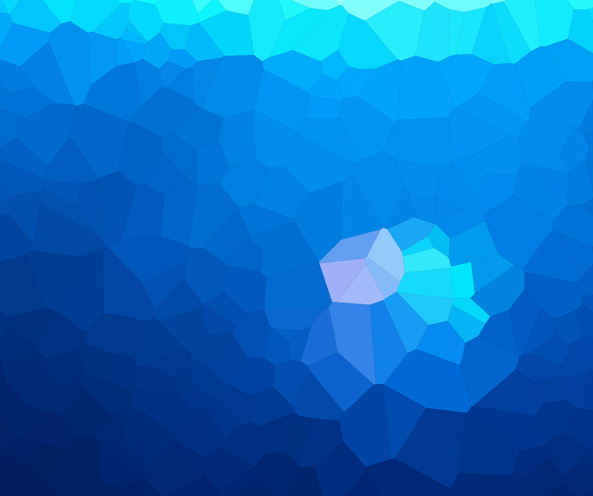
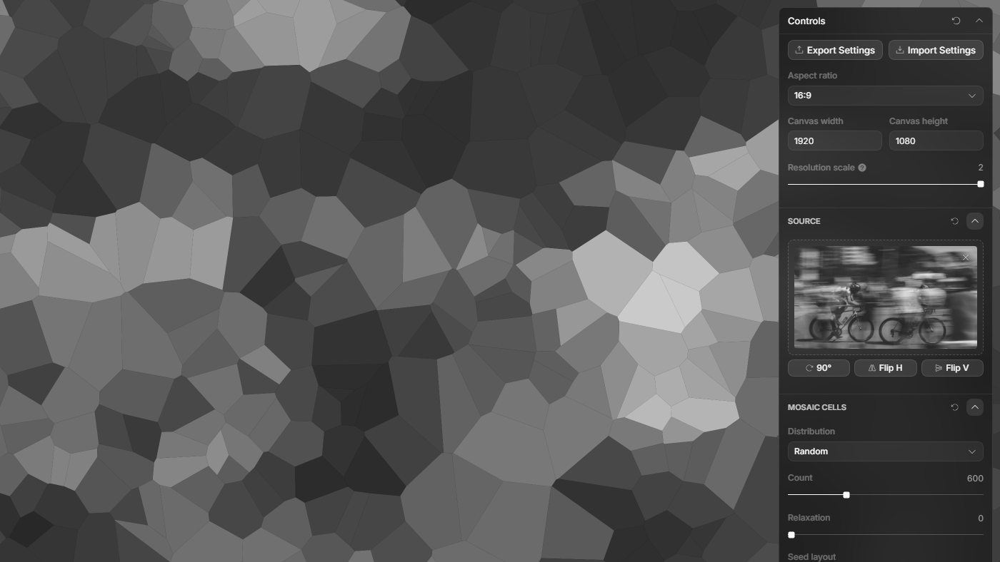

Overview
Voronoi Mosaic is a browser-based image stylization tool: upload a photo and it becomes a mosaic of Voronoi cells, each colored from the pixels inside it. Sliders control how many cells you get, how seeds are placed, how colors are sampled, and whether cells have borders, then export a PNG at up to 8K or dump the seed layout as JSON.
Under the hood it's computational geometry (Delaunay/Voronoi, Lloyd relaxation), image processing (Sobel-guided placement, per-cell color stats), and deliberate performance caching so 2,000 cells on a 4K source stays usable. The rest of this page covers how it's built.

The mosaic pipeline
Each regeneration runs the same sequence: geometry and color are cached where possible so only the affected pass reruns.
- Decode the uploaded image to a capped sample surface
- Place seeds: random, jittered grid, or edge-weighted via a Sobel magnitude field
- Build a Delaunay triangulation, then derive the Voronoi diagram with
d3-delaunay - Optionally run Lloyd relaxation (0–5 passes) for more uniform cell shapes
- Sample per-cell color: average, median, or dominant
- Paint filled cells on Canvas 2D; borders are a separate stroke pass
- Export PNG at the chosen resolution, or JSON of seed and cell data

Engineering decisions
Voronoi geometry at scale
d3-delaunay for Delaunay/Voronoi construction; nearest-seed queries via delaunay.find with hints, not brute-force per pixel; Lloyd relaxation rebuilds the diagram per iteration.Edge-weighted seed placement
Render pipeline caching
Canvas 2D over SVG/WebGL
Schema-driven product shell
canvasContent renderer; sticky footer export; standard PNG export helper with 2K/4K/8K resolution.Testing discipline
pnpm verify:final gate covering docs integrity, unit tests, build, browser acceptance.Features
- Upload source image with rotate/flip transforms
- 20–2,000 Voronoi cells: Random / Jittered / Edge-weighted distribution
- Lloyd relaxation (0–5 passes)
- Per-cell color: Average / Median / Dominant
- Optional cell borders (width, stroke color/opacity)
- Regenerate seed layout on demand
- PNG export at 2K / 4K / 8K; JSON export of seed/cell data
- Canvas zoom, undo/redo, theme toggle
- Background include toggle for PNG export preview
Tech stack
Status
Built 2026. Personal creative tooling, live at voronoi-mosaic.vercel.app, source on GitHub.
Verification: Vitest unit tests, Playwright acceptance, and performance scenarios behind a single pnpm verify:final gate.